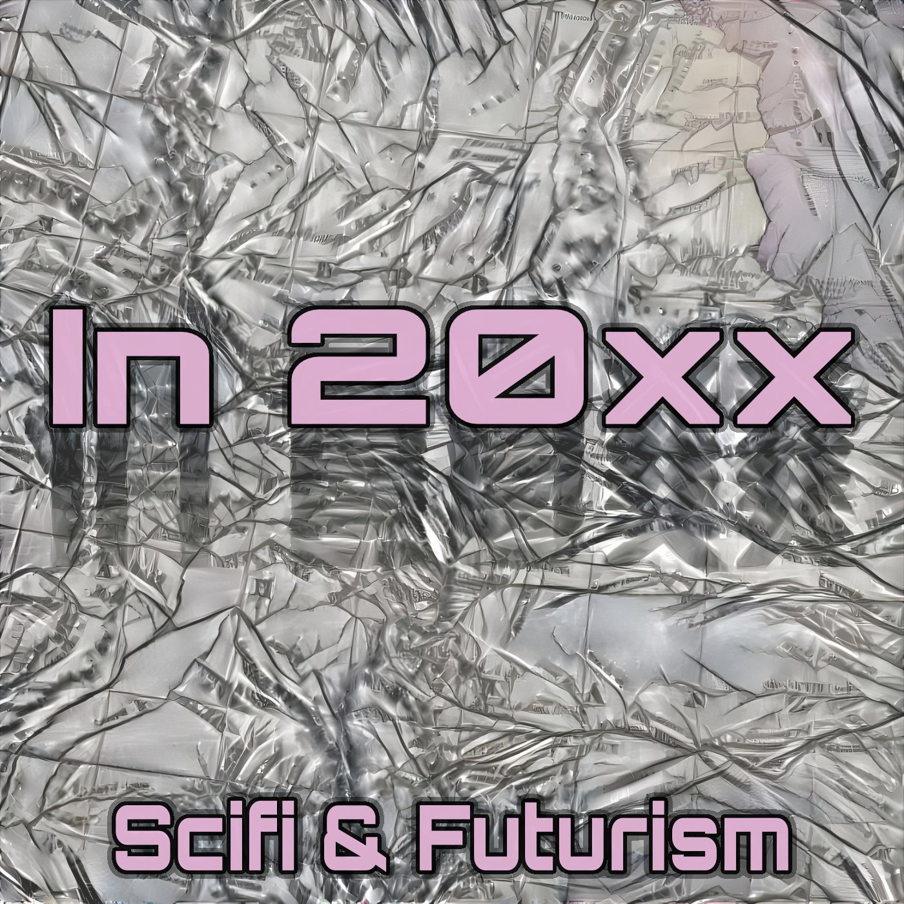

What happens when our deepest fears about the future arrive at the same moment as our boldest dreams? Through immersive storytelling, this project explores the shifting edge of technology, social change, and survival. Will what comes next be utopian or catastrophic? The truth is—it will be both.

Five dispatches from futures worth fearing — and wanting.
Using immersive storytelling, In 20xx places listeners inside future landscapes shaped by real technological trajectories. This isn't prediction — it's preparation. We explore what happens when systems change faster than people do.
Think-provoking but accessible. Big-picture speculation grounded in research. Slightly comedic. Completely earnest about the stakes.
A curated map of the future events, technological shifts, and civilizational turning points explored across episodes.
We're accepting short speculative fiction from independent writers. Your story could become an episode. Futures built by many voices are harder to get wrong.
Every dispatch from the edge of tomorrow. Listen anywhere.
A map of the futures explored in In 20xx. Events, turning points, and the questions we can't stop asking.
AI permeates daily infrastructure. Autonomous systems make decisions previously reserved for humans. The gap between invention and regulation widens.
Brain-computer interfaces move from medical devices to consumer products. Cognitive data becomes the world's most contested resource. The first lawsuits over memory ownership are filed.
Mass automation restructures economies faster than social safety nets can adapt. New civic architectures emerge from necessity — some hopeful, some authoritarian. The question isn't jobs, it's identity.
Climate-driven displacement reshapes civilization's geography. New political entities emerge. "Home" becomes a legal concept rather than a physical one. Some find freedom in the chaos.
Something changes everything. We're still mapping it. The timeline continues — listener submissions and future episodes will fill the gaps.